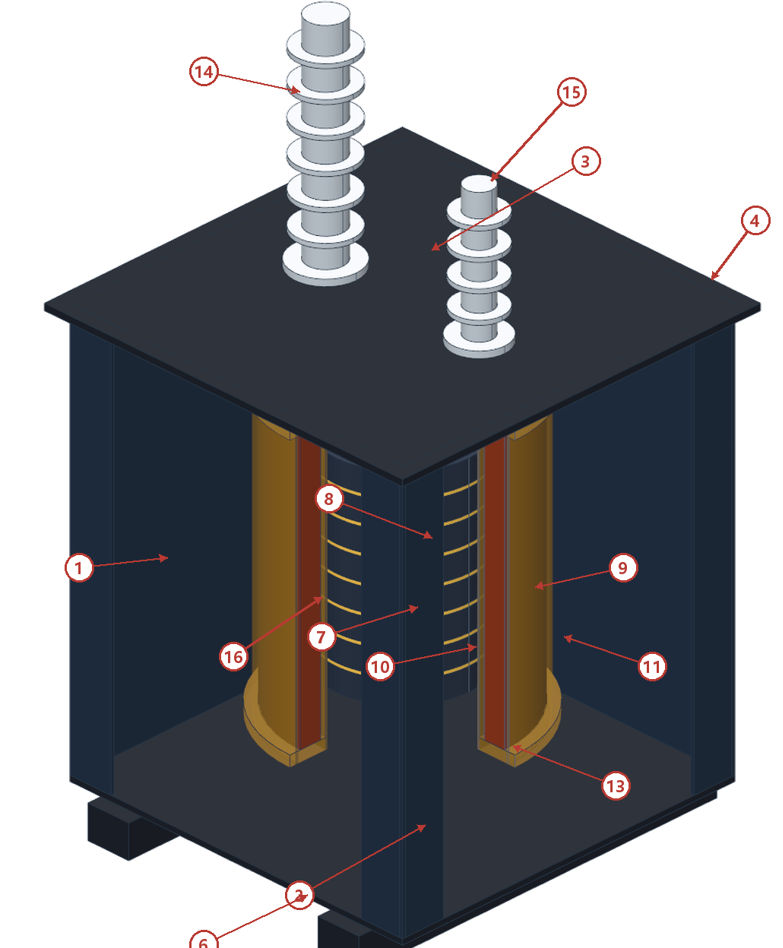
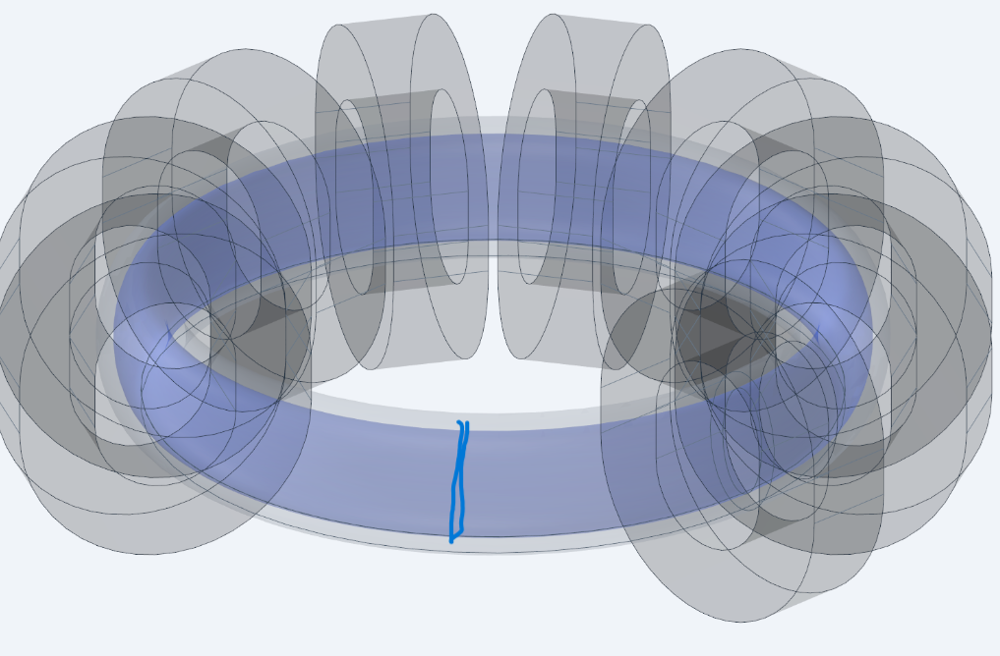
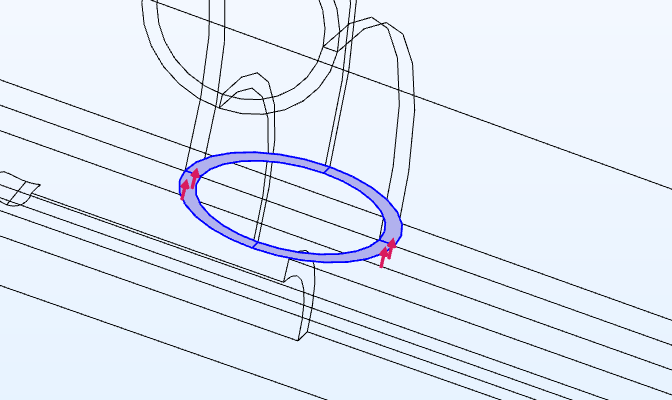
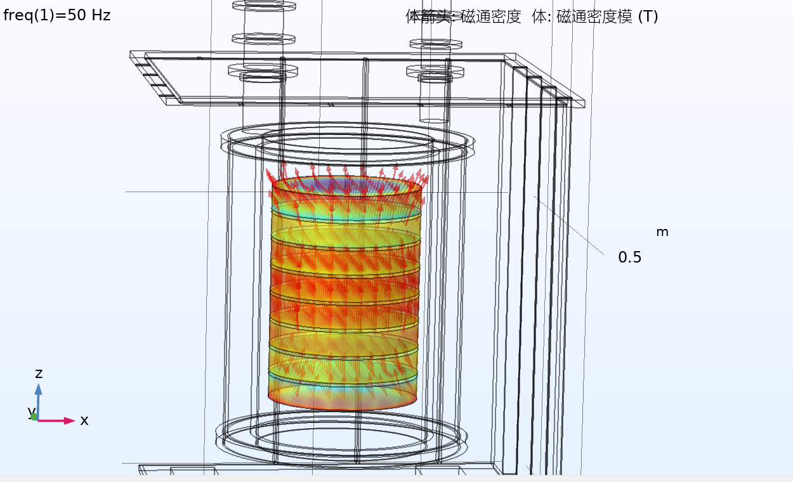

01 / Geometry
建立三维模型
在 COMSOL 中建立包含铁芯、绕组、油箱与套管等主要部件的三维几何，保留内部结构，为后续材料赋值、边界设置与网格划分确定完整的计算区域。
Simulation notes · 001—004
电磁场 / 三维建模 / 有限元
COMSOL Multiphysics 是一款基于有限元方法的多物理场仿真平台。本次以饱和电抗器为对象，完成三维几何建模、线圈输入设置与 50 Hz 磁场求解，观察磁通密度分布，为后续铁芯损耗和温升分析提供依据。

01 / Geometry
在 COMSOL 中建立包含铁芯、绕组、油箱与套管等主要部件的三维几何，保留内部结构，为后续材料赋值、边界设置与网格划分确定完整的计算区域。

02 / Winding
对环形铁芯和绕组进行几何划分，确认线圈的绕制位置与空间布置，为线圈激励、材料参数和网格设置建立基础。

03 / Input
在局部几何中选取线圈区域并检查边界关系，设置相应的输入条件，使模型能够在指定频率下求解电磁场响应。

04 / Magnetic field
在 50 Hz 激励下，铁芯与绕组区域呈现非均匀的磁通密度分布。该结果可用于后续铁损计算，并为进一步的铁芯温升分析提供依据。